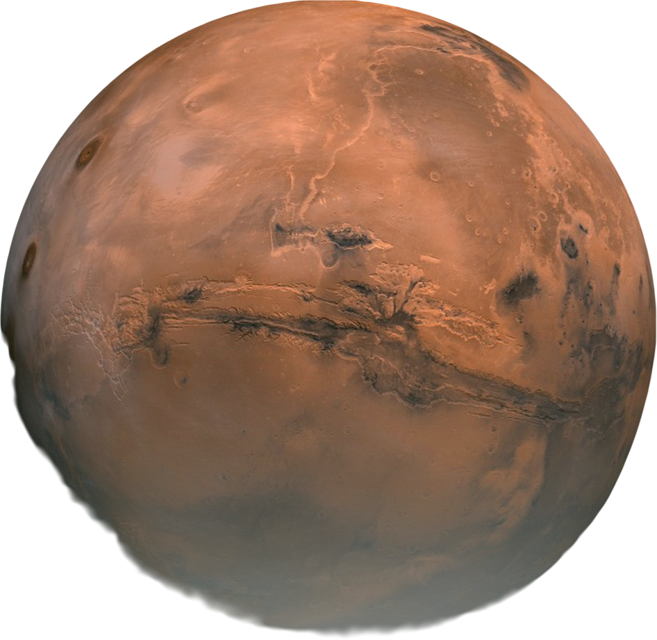

Űrturizmus

Út a bolygók felé
A SpaceX űrhajói a 2010-es évek elején már képesek voltak a Föld körüli pályára való feljutásra, de a rakéták még nem voltak elég erősek ahhoz, hogy a Föld körüli pályáról a Marsra való utazást megvalósítsák.
Manapság ez korántsem probléma, hiszen a rakéták képesek a Marsra utazni.

A Dragon és Starship űrhajók a következő küldetéseket hajtják majd végre:
- Föld körüli pálya
- Űrállomás
- Hold
- Mars
A reggeli ébredés után azt szeretnéd gondolni, hogy a jövő nagyszerű lesz - és ezt jelenti űrhajós civilizációnak lenni.
Erről szól: hiszünk abban, hogy a jövő jobb lesz, mint a múlt.
És nem tudom, hogy mi lehet izgalmasabb, mint kimenni oda és a csillagok között lenni.
- Elon Musk
Miért a Mars?
A Mars a Föld legközelebbi lakható szomszédja. Kissé hideg, de fel tudjuk melegíteni. A légkör főként CO2-ból, némi nitrogénből és argonból, valamint egy-két másik nyomású elemből áll, ami azt jelenti, hogy a Marson növényeket tudunk termeszteni a légkör tömörítésével. A gravitáció a földi gravitáció 38%-a, így könnyen fel tudnál emelni nehéz dolgokat és ugrálni is tudsz.
| Átmérő | 6791 km |
| Naphossz | 24 óra 37 perc |
| Gravitációs Erő | A földi 38%-a |
| Átlagos Távolság a Földtől | 225M km |
| Életkor | 4,5 milliárd év |